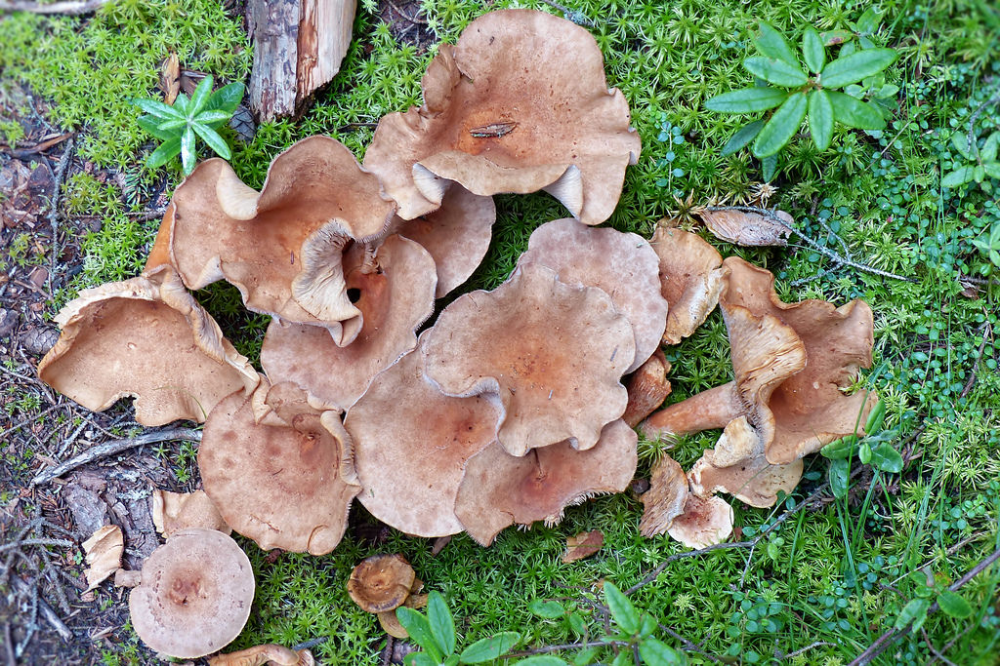
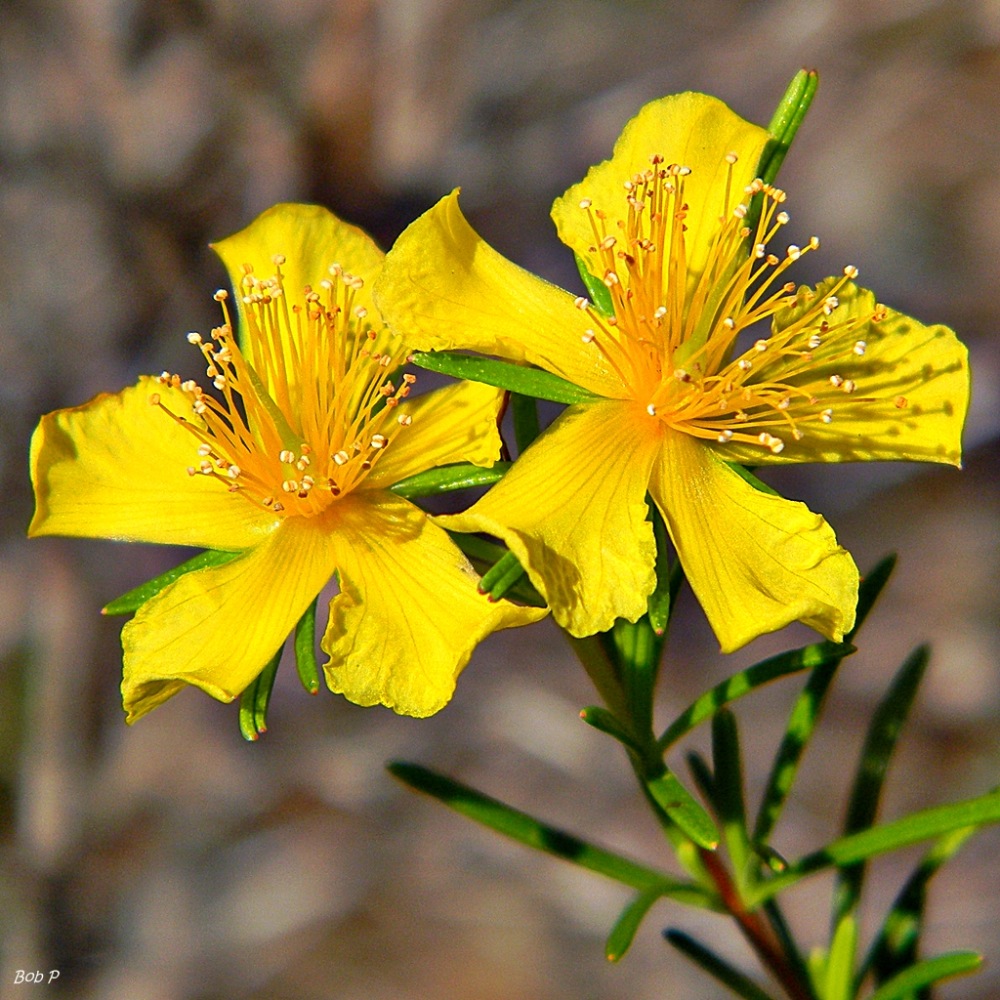
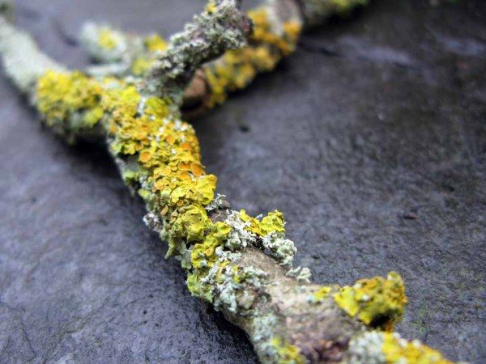

Home
Local Area
History of ITB
Ecology
Personal Stories
Contact ITB
Menu
The Ecology and Enviroment of ITB
We have a wide variety of plants and animals on the ITB grounds. Check out some of them!
The ITB campus has over 1200 hectres of linear woodland cover.

Wild mushrooms are on campus and help make the soil rich.
The Grove of treesshown on the left holds many species of Flora and Fauna.

Hundreds of St John flowers have been grown on Campus.
The roof of the Horticulture building is made of Seedem

Litchen is an ancient plant as has been found throughout ITB.